项目背景
工学院大楼基本情况
- 规模：工学院是南科大成立的第一个学院，工学院新大楼总占地面积 11.5 万平方米，总建筑面积约 6.7 万平方米，由南、北两栋建筑组成。其中，南楼九层，建筑平面呈 C 型，建筑高度 42.3 米，总建筑面积约 47,000 平方米。北楼十层，建筑平面呈 U 型，建筑髙度 46.8 米，总建筑面积约 67,000 平方米。南北楼共用地下室一层，面积近 2 万平方米，约有停车位 350 个。工学院大楼空间主要分配给学院下属8个系（院）。其中，北楼有材料科学与工程系、力学与航空航天工程系、机械与能源工程系和环境科学与工程学院，南楼有电子与电气工程系、海洋科学与工程系、生物医学工程系和计算机科学与工程系。
- 愿景：工学院大楼将容纳 5,000 余名致力于未来科学发展的学者与科学家，致力于探索工程人才培养创新模式，并聚焦产业需求，与企业深度互动，与产业深度对接，促进人才培养、科学研究与成果转化互联互通，走出一条大学与地方产业融合发展的新路径。
- 成果：工学院初步形成了在国内有一定影响力的工科学院，材料科学、工程学进入 ESI 前 1%，力学学科获批成为一级学科博士学位授予点，光电信息科学与工程获批国家级一流专业建设点，力学、材料科学入选广东省“冲一流、补短板、强特色”提升计划重点建设学科，材料科学与工程、环境科学与工程、通信工程获批省级一流专业建设点，学院发展迈入新的阶段，为建设世界一流的工学院奠定了坚实基础。
工学院大楼现有问题
工学院大楼满足了各院系的大多数的基本需求，但仍然存在许多问题，如：电梯太少、中庭绿植设计不合理、楼层内缺乏标识、停车场震动影响精密仪器、自主贩卖机少、缺乏商品店铺、厕所同侧两进门、大型设备难以进出、楼内信号不好等问题。
我们项目小组认为中庭绿植设计不合理以及大型设备难以进出这两个问题相比其他问题来说更加关键，是更有价值去优化和改进的两个痛点。我们小组进一步深入分析，中庭绿植设计不合理问题表现为中庭空间利用率较低，座椅、道路、绿植的设计相互矛盾。首先，部分座椅设置在草丛中间而不是道路两侧，华而不实，不方便给经过的路人做下休息。其次，道路设计不合理，某些路段相对较窄，加之旁边还设置有座椅，在人流量大的情况下会造成人员拥挤。最后，工学院容纳人数 5,000 余人，人流量较大，而南北楼两处中庭设计安排了大面积的绿植，而没有设置车棚摆放空地、功能性区域、消防应急空地等，因而两处中庭实际效用较低。为此，我们小组提出几条优化方向：增设车棚、长椅位置调整、中庭草坪及道路重新设计增加功能性区域等。
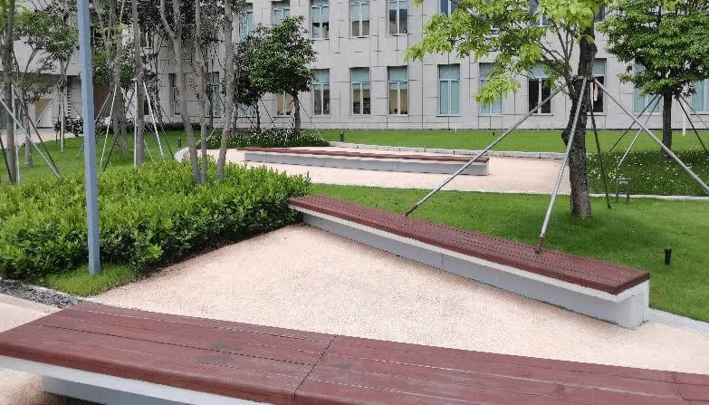
大型设备进出方面，工学院大楼各个进出口面积较小，电梯也存在容量太小的问题，给各个院系搬运大型设备的条件十分有限。每次有大型设备搬运进入工学院都需要吊车、叉车协助搬运，同时还要损坏墙体，破墙而入，效率较低，代价很大。为此，我们小组也提出几条优化方向：合理规划超大、超重设备搬运路线、设置大型货物的吊装平台、建造大型电梯运输等。
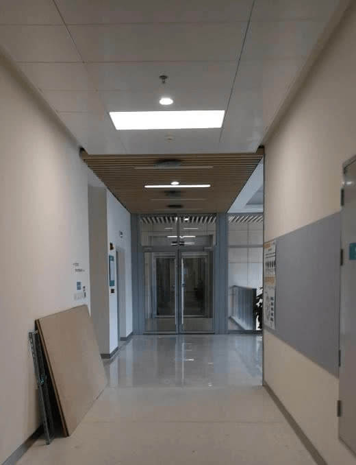
因为项目小组的时间和精力有限，我们无法同时完成中庭绿植优化和大型设备运输两个项目，进过多次组内讨论和分析，我们小组最终选择大型设备运输项目作为我们小组继续深入的方向。
项目启动
项目章程
- 项目目的
- 工学院大型设备运输问题得到充分全方面地解决，大型设备可以高效率地顺利地搬运到目标位置，工学院形成一套完整的处理大型设备搬运的系统或同等替代方案。
- 可测量的项目目标和相关的成功标准
- 项目方案可以满足各院系实验室需求，可以满足各种不同类型、尺寸和形状的设备搬运，有相应的异常情况处理方案来应对搬运意外情况。
- 高层级需求
- 项目方案得到各院系教授和科研人员的高度认可，项目方案以高效率、低沉本、最优化方式解决大型设备搬运进入工学院问题，形成一整套工学院大型设备搬运流程指南，指导各院系实验室按照指南高效完成搬运。
- 高层级项目描述、边界定义以及主要可交付成果
- 一套可行的、完整的、高效的大型设备搬运项目方案或同等可替代方案，可以低损耗、低成本的完成绝大多数大型设备搬运任务，得到各院系教授和科研人员的高度认可。
- 整体项目风险
- 项目成本过高，项目资金不足的风险；
- 项目难度系数过高，造成人员伤亡，火灾等意外情况的风险；
- 项目施工噪声过大、粉尘过多影响工学院科研人员工作的风险；
- 施工堵塞交通的风险；
- 施工造成工学院大楼结构破损（电线管道系统被损坏等情况）的方向。
- 关键相关方名单1
| 人员 | 角色与关系 |
|---|---|
| 工学院各实验室 | 需求端 |
| 工学院领导 | 监管者 |
| 外包施工方 | 方案执行者 |
| 项目小组 | 方案提出者 |
- 预先批准的财务资源
- 项目启动资金100万元，后续的资金根据项目方案具体情况批准（拟）。
- 项目审批要求
- 项目所提出的大型设备搬运方案在效率、成本、规格等方面均达到了工学院实验室的要求。项目结束后，由工学院领导进行评审，确定项目是否已经成功。
- 项目退出标准（项目在出现下述情况时，终止）
- 项目施工方未能按要求实现大型设备搬运条件的；
- 项目未通过工学院领导评审的；
- 项目资源不能支持项目进展的；
- 项目外部环境出现重大变化，导致项目难以进行下去的；
项目前期调研
本次调研旨在调查工学院各院系对大型设备运输的需求，进一步证实工学院各院系的确有大型设备搬运的需求，并且存在搬运大型设备进入工学院困难的问题。
本次调研采用线上问卷的形式，节省调研成本并高效获得调研数据，问卷设置合理，题目清晰简洁，选项简单分明，既能节省被调研者的填问卷时间，又能快速收集到足够的问卷。问卷内容详见附录。
问卷总体情况
本次问卷为避免收到同一实验室多次重复问卷提交，特意将调研对象聚焦到工学院研究生 2021 级新生，等比例减少重复问卷的同时不会过分影响问卷最终的数据情况，方式为限制问卷传播范围，只将问卷转发到各个研究生21级学生群，同时设置单个用户只能填写一次问卷。
本次问卷收到了来自电子电气工程系、材料与科学工程系等十个工学院所属院系的问卷共 101 份，问卷数量充足，问卷数据具有一定的代表性，其中收到机械与能源工程系的答卷最多，占 34.65%，系统设计与智能制造学院的问卷最少，占1.98%。
问卷分析结果
分析调研结果，48.51% 的 21 级研究生所在课题组有大型设备的需求，在这部分同学中，有 93.88% 的人碰到大型设备很难搬运进工学院的问题，只有3个人表示所在课题组没有碰到大型设备搬运进工学院的难题。以上几项数据表明：有接近半数的实验室有大型设备的需求，而且这半数实验室中绝大多数实验室都被大型设备如何搬运进工学院这一难题所困扰着，证明大型设备搬运不仅需求面广，也是众多实验室希望解决的一个难点。（为了有清晰的认知和统一的判断标准，我们小组在收集问卷时定义最大直径超过 2.5m 的设备即为大型设备。）
另外，在另一半所在实验室没有大型设备需求的同学中，仍然有 73.08% 的同学认为工学院现有设施很难满足运输大型设备这一难题，由此不难发现大多数同学都认为现有工学院大楼的设施存在不适合大型设备进出的这一结构问题。
在选择优化方向方面，有 30.77% 的同学倾向于扩宽工学院进出口大门面积来解决难以搬运大型设备这一难题，而 23.08% 的同学选择增设大型设备货梯这一解决方案，还有 26.92% 的同学倾向于将大型设备实验室转移到工学院大楼之外合适的地方，而还有 15.38% 的同学认为保持现有工学院的条件即可，不需要做调整。
综合以上调研结果，我们小组一致认为工学院大型设备搬运问题是一个相当大的痛点，而且这一痛点辐射面广，影响深远，是一个急需被解决的一大难题。同时，以上调研也论证了我们小组原有的想法，让我们小组更加坚定地在大型设备搬运这一项目上进一步开展分析讨论，寻找最优的解决方案。
-
工学院领导指代工学院各级行政领导，院长以及工学院各个院系系主任；项目小组指代本项目策划小组，人员包括王沛尧、肖煜凡、郭勇、刘诗翔、梁钰栋、王致远、高慧。 ↩
项目规划
目规划过程，可以包括以下过程中的部分或全部：制定项目管理计划，规划范围管理，收集需求，定义范围，创建WBS，规划进度管理，定义活动，排列活动顺序，估算活动持续时间，制定进度计划，规划成本管理，估算成本，制定预算，规划质量管理，规划资源管理，估算活动资源，规划沟通管理，规划风险管理，识别风险，实施定性风险分析，实施定量风险分析，规划风险应对，规划采购管理，规划相关方参与。
方案一：另辟蹊径，规划新入口
定义范围
该方案主要以改变工学院大型设备进出通道为核心，建立新的通道以便于大型设备的进出。
创建 WBS
- 前期准备
- 调研；
- 墙体结构强度计算；
- 提交完整项目方案；
- 批示呈批。
- 方案实施
- 实验室实施准备：移动一些设备，为施工腾出空间；
- 拆除工作：拆除墙体；
- 安装工作：拆除墙体后安装卷帘门。
- 后续工作
- 器材布局；
- 地面清洁。
排列活动顺序
估算成本
时间约 10 个工作日，墙壁拆除施工费约 3,000 元，入口构建材料费约 2,000 元，共计约 5,000 元。
规划风险管理
- 设置施工安全生产牌；
- 文明施工牌，做好墙面拆除工程施工现场的围护。在墙面拆除工程施工现场醒目位置设置施工标志牌、安全警示标志牌，采取可靠防护措施，实行封闭施工；
- 在拆除施工作业过程中，如发现不明电线（缆）、管道等应停止施工，采取必要的应急措施，经处理后方可施工。如人员伤亡事故，必须及时向有关部门报告；
- 拆除时对拆除物应采取有效的下落控制措施；
- 拆除工程施工时，应有防止扬尘和降低噪声的措施，尽可能地降低对老师及学生造成的影响。
方案二：剑走偏锋，专用设备楼
定义范围
本方案考虑在工学院北边空地建设大型厂房，放置大型设备。其中建设的设施包括大型若干加工设备实验室。
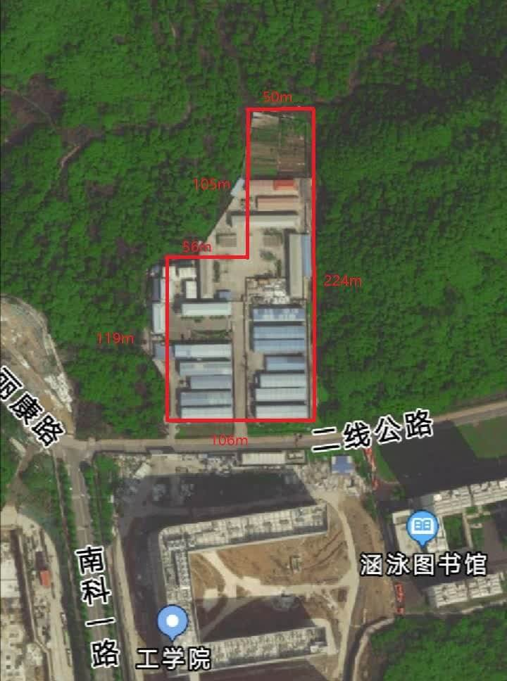 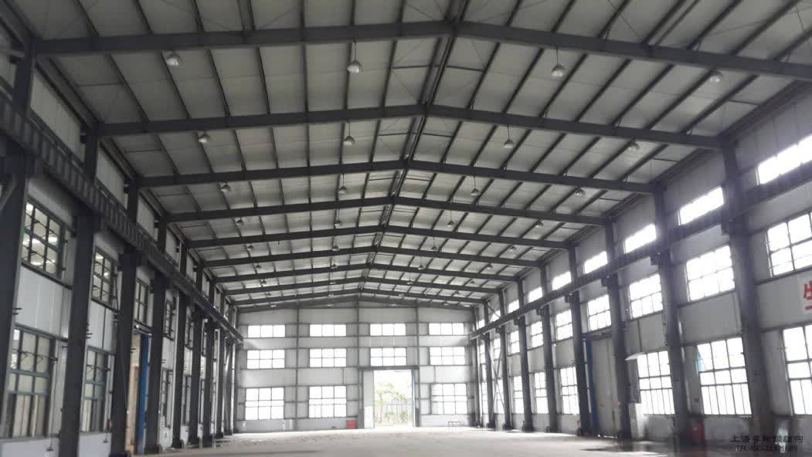
创建 WBS
- 前期准备
- 调研选址；
- 设计图纸；
- 申请土地批示呈批；
- 寻找施工单位。
- 方案实施
- 建造厂房结构；
- 完善厂房细节。
- 后续工作
- 清洁现场；
- 预约时间集中搬迁设备。
排列活动顺序
估算成本
时间约 90 个工作日，钢结构厂房每平方米约 400 元，拟定厂房面积为 500 平方米，厂房成本约 20 万元，人工费约3万元，其他材料费约2万元。
规划风险管理
- 设置施工安全生产牌；
- 文明施工牌，做好墙面拆除工程施工现场的围护。在墙面拆除工程施工现场醒目位置设置施工标志牌、安全警示标志牌，采取可靠防护措施，实行封闭施工；
- 在拆除施工作业过程中，如发现不明电线（缆）、管道等应停止施工，采取必要的应急措施，经处理后方可施工。如人员伤亡事故，必须及时向有关部门报告；
- 风口按要求安装或做相应处理；
- 排水管道与地漏按要求安装；
- 应做好防火防灾预警。
方案三：直截了当，破门而入
定义范围
本方案在实施过程中，根据需要拆除机床搬运过程中所经过的门禁设施；并且在不同的路段需要使用不同的工具，如叉车、吊车以及地牛等。搬运过程需保证设备不被损坏。
搬运过程中应尽量避免设备发生磕碰和损坏已有设施，叉车、吊车等作业时需注意。
创建 WBS
- 前期准备
- 呈批申请：工程车辆以及搬运工人的入校申请、实验室电路改造申请、拆除门禁申请；
- 测量：测量工学院大楼入口玻璃门尺寸、测量实验室安全门尺寸；
- 人员联系：联系学校后勤人员准备当天拆除门禁设施、联系搬运公司。
- 方案实施
- 实验室布局调整：将一些设备搬出，为机床搬运腾出空间；
- 拆除工作：拆除大楼玻璃门以及门禁、拆除实验室门禁；
- 机床搬运：搬运工人利用叉车、吊车将机床从大楼外搬入实验室内。
- 后续工作
- 实验室器材的重新布局；
- 安装拆除的门禁设施；
- 地面清洁。
排列活动顺序
估算成本
本方案预计实际作业时间为 1 天，需要搬运工作人员 8 人，10 吨位吊车一辆，4.5 吨位叉车和 2 吨位叉车各一辆，地牛叉车一辆。所需费用如下表所示：
| 项目 | 所需费用/元 |
|---|---|
| 人工费 | 4,000 |
| 吊车租赁 | 2,000 |
| 4.5 吨位叉车租赁 | 1,000 |
| 2 吨位叉车租赁 | 700 |
| 地牛叉车租赁 | 1,000 |
| 总计 | 8,700 |
规划风险管理
| 呈批需要反复修改 | 机床尺寸与大于门框尺寸 | 搬运过程中机床出现磕碰 | 大楼地面、墙壁被破坏 | |
|---|---|---|---|---|
| 成本 | 影响较小 | 影响显著 | 影响较大 | 影响较小 |
| 质量 | 影响较小 | 影响显著 | 影响显著 | 影响较小 |
| 进度 | 影响显著 | 影响显著 | 影响较小 | 影响较小 |
方案选择
上述三个方案中，方案一和方案三只针对一个设备进入实验室，虽然两种方案所需的费用很少，但是有新设备进来时都需要做一次重复的工作。方案重复实施，不仅耗费人力物力，而且会对工学院大楼内已有设施造成破坏，设备搬运或者对实验室进行门窗改造时会有噪音以及环境污染。虽然在工学院附近重新选址建造一个专门用于放置大型实验设备的场所的方案所需费用较高，但是集中管理比较方便，且设备根据运行条件不同分开放置。因此后续项目管理的内容均建立在选择方案二的前提下。
项目执行
pass
项目监控
内容
持续的监督使项目团队和其他相关方得以洞察项目的健康状况，并识别需要格外注意的方面。在监控过程组，需要监督和控制在每个知识领域、每个过程组、每个生命周期阶段以及整个项目中正在进行的工作。
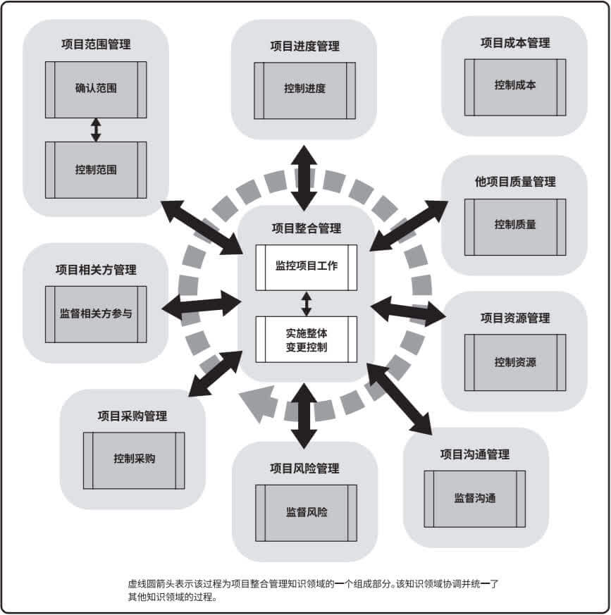
监控项目工作
跟踪、审查和报告整体项目进展，让团队成员了解项目的当前状态，并通过成本和进度预测，让团队成员了解未来项目状态。在这个过程中利用团队整体的工作进展，每个队员的工作状态，以及队员们最近一段时间工作的心得体会更新一些项目文件，更新的项目文件如下： - 成本预测； - 问题日志； - 经验教训登记册； - 风险登记册； - 进度预测。
实施整体变更控制
审查所有变更要求，批准变更，管理对可交付成果、组织过程资产、项目文件和项目管理的变更，并对变更结果进行沟通，确保对项目中已记录在案的变更做综合评审。在这个过程中我们团队考虑了变更对整体项目目标以及计划的影响，尽可能地减少整体项目风险。
同时，这个过程中输入的项目管理文件如下： - 变更管理计划； - 配置管理计划； - 范围基准； - 进度基准； - 成本基准。
输出文件如下： - 估算依据； - 需求跟踪矩阵； - 风险报告。
确认范围
验收已完成的项目，通过确认可交付的成果，来提高最终产品获得验收的可能性。
同时，这个过程中输入的项目管理文件如下： - 范围管理计划； - 需求管理计划； - 范围基准。
本过程输入的项目文件如下： - 经验教训登记册； - 质量报告； - 需求文件； - 需求跟踪矩阵。
控制范围
监督项目和产品的分为状态，管理范围基准变更，以确保在整个项目期间对范围基准的维护。本过程的主要工作是通过输入的项目管理计划、项目文件、工作绩效数据以及组织过程资产，得到变更请求、项目管理计划更新以及项目文件更新。
控制进度
监督项目状态，以更新项目进度和管理进度基准变更，以确保整个项目期间保持对进度基准的维护。
本过程更新的项目管理计划组件如下： - 进度管理计划； - 进度基准； - 成本基准； - 绩效测量基准。
在本过程更新的项目文件如下： - 假设日志； - 估算依据； - 经验教训登记册； - 项目进度计划； - 资源日历； - 风险登记册； - 进度数据。
控制成本
监督项目状态，以更新项目成本和管理成本基准变更，以确保在整个项目期间保持对成本基准的维护。本过程的主要工作是通过输入的项目管理计划、项目文件、项目资金需求、工作绩效数据以及组织过程资产来得到成本预测、变更需求、项目管理计划更新以及项目文件更新。
控制质量
监督和记录质量管理活动执行结果，核实项目可交付成果和工作已经达到主要相关方的质量要求，可供最终验收，以确保项目输出完整、正确并满足客户期望。
本过程输入的项目文件如下： - 经验教训登记册； - 质量测量指标； - 测试与评估文件。
本过程更新的项目文件如下： - 问题日志； - 经验教训登记册； - 风险登记册； - 测试与评估文件。
监督沟通
按沟通管理计划和相关方参与计划的要求开展高效的信息传递，使队员之间能够及时的沟通，确保满足项目及其相关方的信息需求。 本过程输入的项目管理计划组件如下：
本过程输入的项目管理计划组件如下： - 资源管理计划； - 沟通管理计划； - 相关方参与计划。
本过程输入的项目文件如下： - 问题日志； - 经验教训登记册； - 项目沟通记录。
监督风险
在整个项目期间，监督商定的风险应对计划的实施、跟踪已识别风险、识别和分析新风险，以及评估风险管理有效性，使项目决策都基于关于整体项目风险敞口和单个项目风险的当前信息。
本过程输入的项目文件如下： - 问题日志； - 经验教训登记册； - 风险登记册； - 风险报告。
本过程更新的项目文件如下： - 假设日志； - 问题日志； - 经验教训登记册； - 风险登记册； - 风险报告。
监督相关方参与
监督项目相关方关系，并通过修订参与策略和计划来引导相关方合理参与项目，随着项目进展和环境变化，维持或提升相关方参与项目的效率和效果。
本过程更新的项目管理计划组件如下： - 资源管理计划； - 沟通管理计划； - 相关方参与计划。
项目收尾
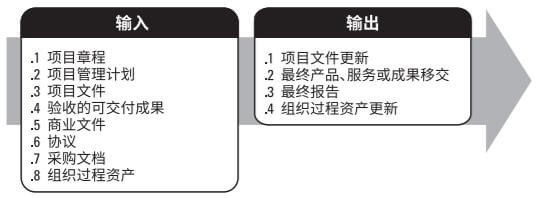
项目收尾主要用于存档项目与阶段信息，完成计划的工作，释放组织资源以开展新的工作。通过这次项目管理 Project，我们学到了很多知识，同时也摸索出了一系列实用的工具，可以将原先繁琐的项目管理流程规范化、简单化。
版本控制
一个项目可能需要迭代十几版，甚至几十版才能最终交付，因此版本控制对于项目来说至关重要，所以我们小组采用 GitHub 对此次项目进行了托管，并对其辅助项目完成的各项功能进行学习与掌握。例如我们的项目就采用了 GitHub Project Boards 进行规划。
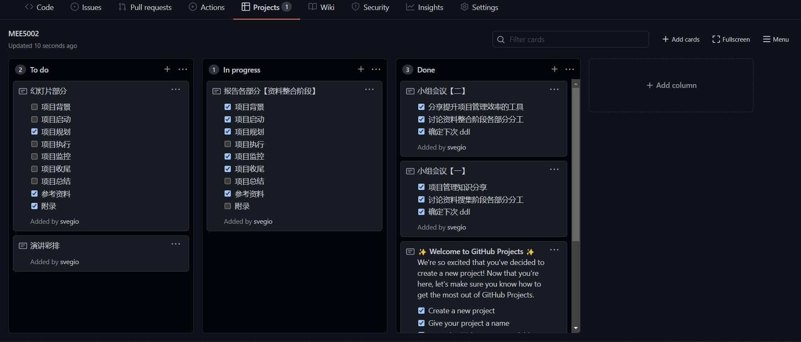
此外，GitHub Project 还有 Beta 版本，等服务稳定下来我们会继续尝试。
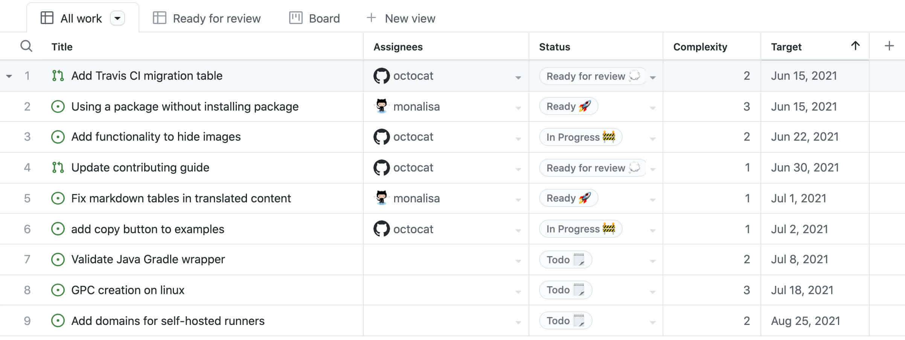
GitHub 针对项目贡献的可视化与评估口碑也很好，但是此次项目涉及到代码的部分很少，所以这部分没有充分利用，希望以后的项目中可以体验。
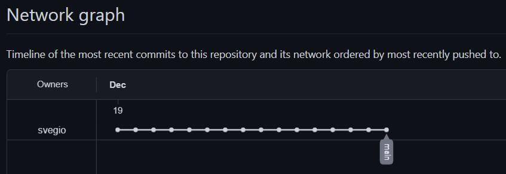
最后，GitHub 的另一个好用的工具是 Issues，类似课程中讲的敏捷开发，项目团队可以和使用者进行高效的沟通，快速修改或增强已有的功能。
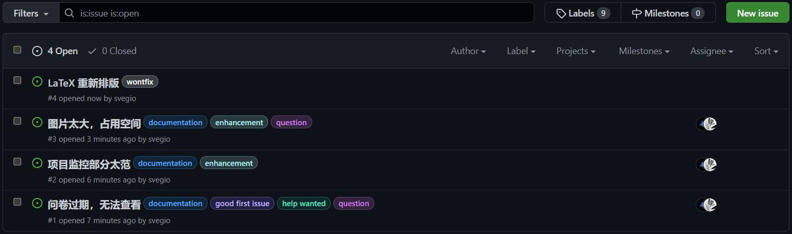
资料共享
在项目管理中，团队之间的资料共享也是令人头疼的一环，通过艰苦卓绝的摸索，我们最后构建了以 CodiMD 合作报告小片段、腾讯文档合作报告最终版、Web File Browser 合作整理文件的资料共享工具链。
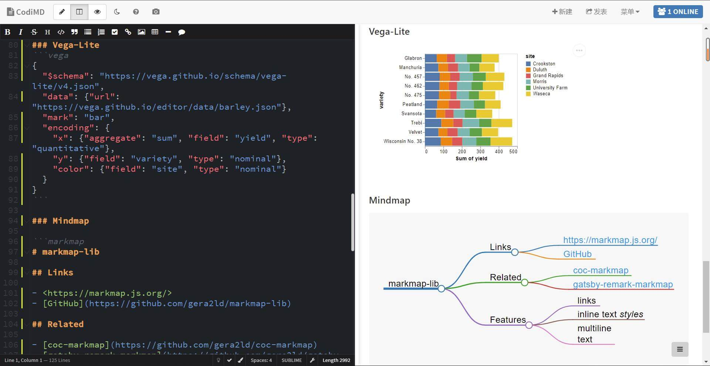
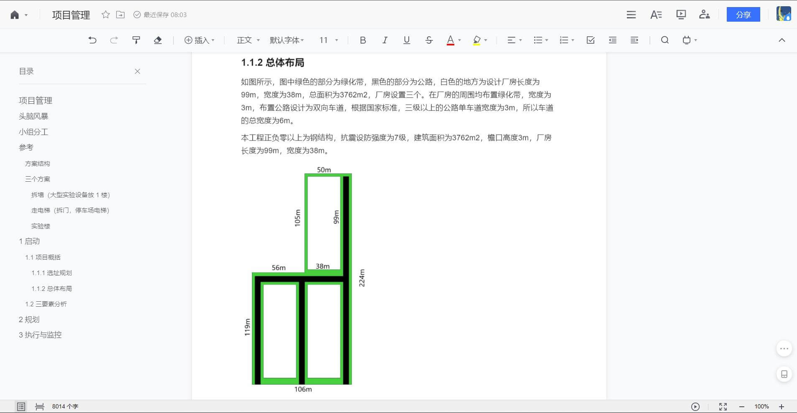
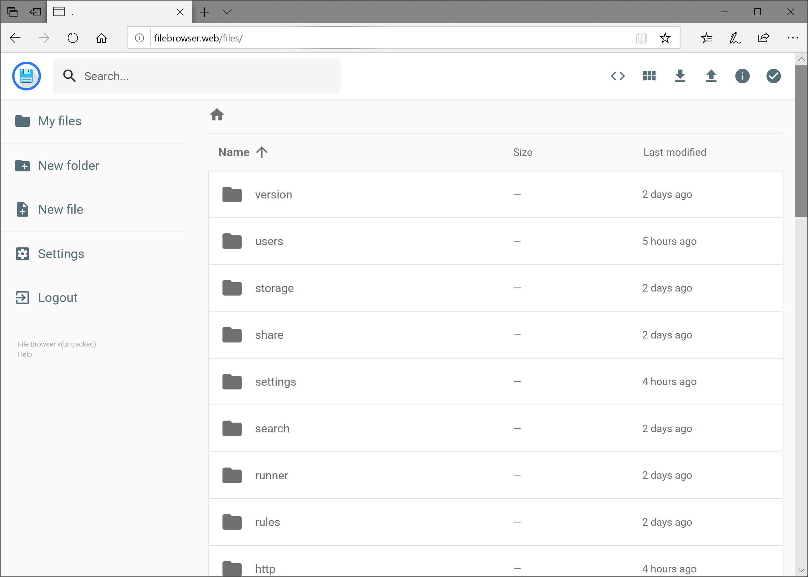
结果展示
项目展示一开始我们打算使用语雀，但是后来发现了自由度更高的 MkDocs，并且配置了打印页的功能，将报告与展示合二为一，减少了团队的工作量。
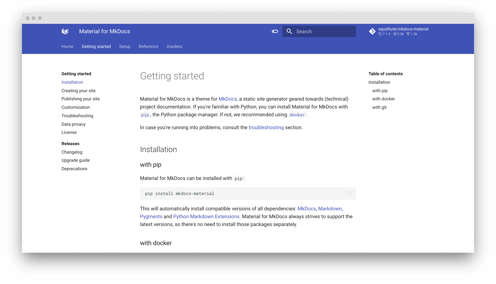
项目总结
pass
参考资料
文献（GB/T 7714 标准）
- Rose K H. A guide to the project management body of knowledge (PMBOK® Guide)—Fifth Edition[J]. Project management journal, 2013, 3(44): e1-e1.
- Alliance A. Agile Practice Guide, Project Management Institute, 2017: Agile Practice Guide[M]. Bukupedia, 2017.
网站
- Laws, Theories, Principles and Patterns that developers will find useful
- Linux-on-the-desktop pioneer Munich now considering a switch back to Windows
- Teambition | 案例中心
- TAPD-行业客户案例
- 腾讯内部几近满分的项目管理课程 PPT
工具
附录
问卷内容
- 你所在院系是？
- 你所在课题组是否有大型设备的需求？（定义最大直径超过2.5m的设备为大型设备）
- 你所在课题组的大型设备有……
- 你所在课题组是否碰到大型设备很难搬运进工学院的问题？
- 你是否认为工学院现有设施很难满足运输大型设备？
- 面对现有工学院搬运大型设备的条件，你更倾向于哪个解决方案？
- 扩宽大门面积
- 增设大型设备货梯
- 大型设备实验室转移到别处
- 保持现有条件即可
- 都不合适
- 不吐不快，你对工学院设施，场地分配有什么吐糟（非必填项）